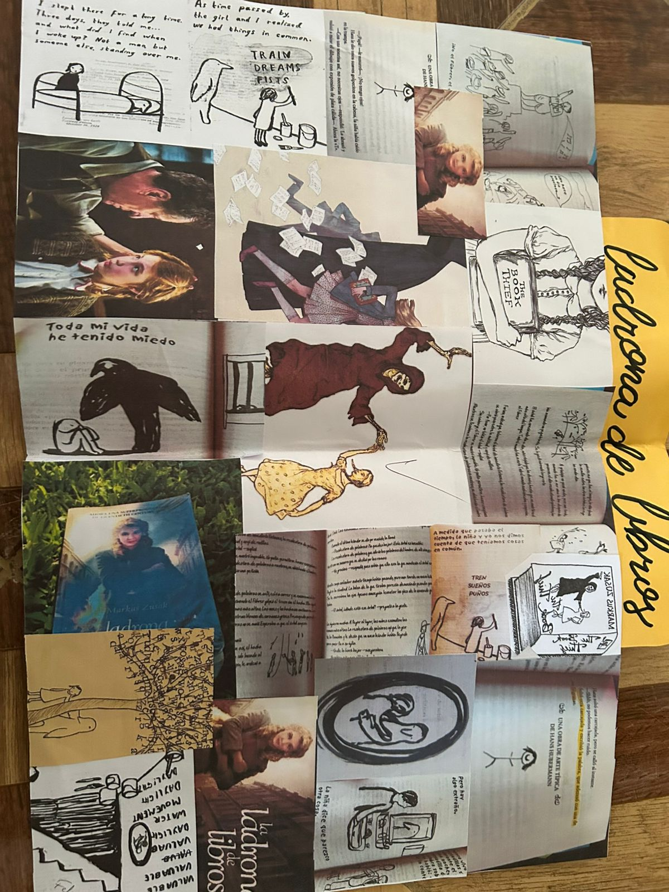
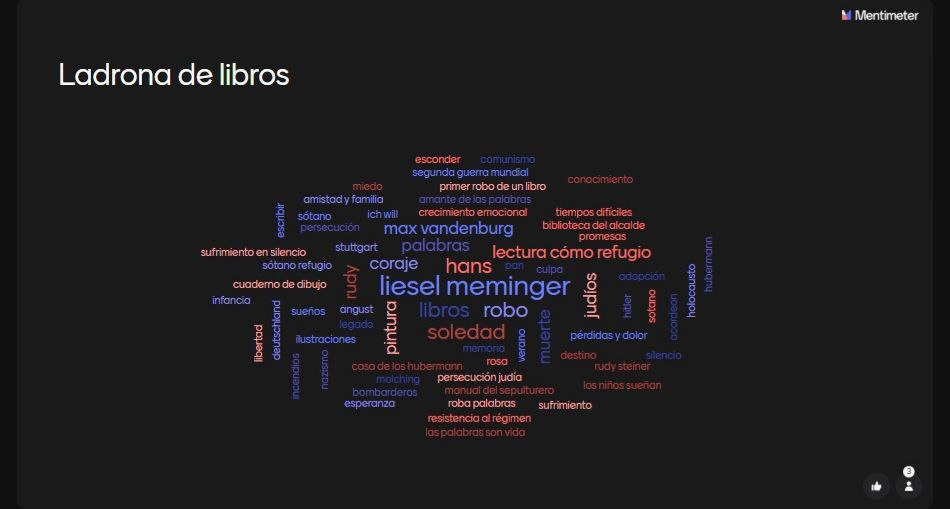

Escuela Preparatoria Oficial no.60, Estado de México, Jocotitlán
Año De La Mujer Indígena 2025
Escuela Preparatoria Oficial no.60, Estado de México, Jocotitlán
Año De La Mujer Indígena 2025
Markus Zusak es un escritor australiano nacido en 1975. Es conocido principalmente por su novela *La ladrona de libros*, que ha sido traducida a más de 40 idiomas y adaptada al cine. Zusak ha ganado diversos premios literarios y su estilo se caracteriza por un enfoque sensible hacia los personajes y una narrativa emotiva y original.
Párrafo 1: Liesel Meminger es presentada viajando en un tren con su madre, cuando presencia la muerte de su hermano menor. Esto marca profundamente su vida.
Párrafo 2: Tras el entierro de su hermano, Liesel encuentra su primer libro, lo que inicia su amor por las palabras. Es llevada a vivir con la familia Hubermann.
Reflexión: Este capítulo me enseñó cómo las tragedias pueden marcar el inicio de nuevas etapas importantes en la vida.
.jpg)
Experiencia: Aprendi que los libros pueden ser refugio en tiempos difíciles.
Párrafo 1: Liesel se adapta poco a poco a su nueva familia y aprende a leer con la ayuda de Hans Hubermann, su padre adoptivo.
Párrafo 2: La relación con su madre adoptiva, Rosa, es más complicada, pero Liesel empieza a encontrar consuelo en la lectura.
Reflexión: Este capítulo me hizo valorar el poder de la lectura para sanar heridas emocionales.

Experiencia: La amistad entre Liesel y Rudy me recordo lo valioso que es tener buenos amigos.
Párrafo 1: Liesel conoce a Rudy, su mejor amigo, y juntos viven muchas aventuras en el barrio.
Párrafo 2: La figura de la Muerte, que narra la historia, nos muestra una perspectiva única de los horrores de la guerra y la belleza de lo cotidiano.
Reflexión: Este capítulo me mostró cómo incluso en los peores momentos, la amistad y la esperanza pueden sobrevivir.

Experiencia: La historia me enseño que ayudar a otros, aunque sea peligroso, puede ser un acto de amor.
Párrafo 1: La familia Hubermann oculta a un joven judío llamado Max en su sótano, arriesgando sus vidas.
Párrafo 2: Liesel desarrolla una profunda amistad con Max, compartiendo historias y sueños en medio del horror nazi.
Reflexión: Este capítulo me hizo reflexionar sobre la importancia del valor, la empatía y la solidaridad.

Experiencia:Cpmprendi que la perdida nos hace mas fuertes y nos enseña a valorar a quienes amamos.
| Parcial | Actividad | Evidencia |
|---|---|---|
| 1er parcial | QUIZZ 1 | |
| 2do parcial | Collage |  |
| 3er parcial | Mapa de ideas |  |
Obra de teatro del 22 de mayo, "LOS 5 SENTIDOS":